Mascot¶
Voron is Russian for raven, and there is no official Voron character — so this one is ours: a raven drawn from real bird anatomy, black with a blue-violet sheen on crown and wing coverts, the same scheme as the machine. Heavy hooked bill with bristles over the nostrils, shaggy throat hackles, a wedge tail, scaled feet, one big dark eye — and a slight upturn at the hinge of the bill, so it is a friendly bird rather than a stern one.
Twenty files in three views. Profile when the bird is looking at something; three-quarter when
it is doing something and wants you to see it; front when it is addressing you directly. Every file
animates gently on its own and goes completely static under prefers-reduced-motion: reduce.
Nothing in the manual uses these yet. This page is the review: look at each pose on both backgrounds, kill the ones that do not earn their place, then pick a name. The spec — the three view constructions, layer names, palette, the humour rule and where each pose is proposed to go — is in STYLE.md.
The badge¶
Three-quarter head and shoulders, simplified: both eyes, one catchlight, the blue crown. This is the only file that may be used small; the detailed poses below mush at that size.
{kind=link}
{kind=link}
{kind=link}
Profile — the bird looking at something¶
Side on, one eye, the folded wing at full detail. Use it when the subject of the page is the thing the bird is looking at, not the bird.
Base — standing¶
The default bird. Home page, beside the title.
{kind=link}
{kind=link}
Check — through a magnifier¶
Verifying before moving on: the Check field, and chapters that end in a measurement. Held by the handle, wingtip curled round the grip, lens out past the bill.
{kind=link}
{kind=link}
Gather — a tray of screws¶
Staging the parts for a run of steps: the generated Gather for this segment block.
{kind=link}
{kind=link}
Pause — asleep on a spool¶
Nightcap with a tassel and pom-pom hanging down the back, clear of the bill. Stopping for the
night: Pause: boxes, the Tonight planner, and plates that run overnight.
{kind=link}
{kind=link}
Print — watching a first layer¶
Perched on the Core One, watching it go down: print-batch overviews and slicer setup.
{kind=link}
{kind=link}
Screen — watching a console¶
Firmware and software steps: Ch 12 flashing, Ch 13 first startup. The bar fills as you watch.
{kind=link}
{kind=link}
Three-quarter — the bird doing something, turned to you¶
Body angled toward the reader, head turned further so both eyes read. This is the working view: the bird is a character with a job, and it is including you in it.
Base, three-quarter¶
The default bird, turned. Anywhere the page is about the two of you rather than the machine.
{kind=link}
{kind=link}
Pass — cheering with a caliper¶
A gate clears. The green tick is the only green in the set.
{kind=link}
{kind=link}
Fail — a shrug and a reprint spool¶
A gate does not clear. Both wings low with the tips drooping and the head tilted down — rueful, never mocking: print it again, nobody died.
{kind=link}
{kind=link}
Tip — an idea¶
A shortcut worth knowing: Tip: boxes, at most one per chapter.
{kind=link}
{kind=link}
Helper — the raven and the fledgling¶
Steps that want two pairs of hands: the Helper field and the "With a helper" section. The fledgling is its own build — bigger head, stubby bill still gaping, short tail, stubby legs.
{kind=link}
{kind=link}
Hex key — turning a fastener¶
Frame, extrusion and fastener steps: Ch 01 squaring, and any step whose verb is tighten.
{kind=link}
{kind=link}
Caliper — reading a measurement¶
Measurement steps, with the display turned toward you: test cubes, belt spacing, gate numbers.
{kind=link}
{kind=link}
Point — look here¶
"Look at this one": Do lines that single out a part, and diagrams that need a callout.
{kind=link}
{kind=link}
Carry — a labelled bin¶
Sorting and kit-day steps: the bin-label page, and the per-chapter sorting diagrams. Both wings come down to their own corner of the bin, the far one round the outside.
{kind=link}
{kind=link}
Cable — plugging in¶
Ch 10 wiring. A small keyed plug held out toward an off-frame socket, its lead running down to a loose coil by the feet. Low voltage only: never mains, never a stripped conductor.
{kind=link}
{kind=link}
Front — the bird addressing you¶
Chest and both shoulders square to the reader, bill pointing at you — with about ten degrees of turn in it, so it reads as a bird looking at you rather than a symmetrical blob. Reserved: a front view is the bird speaking to you, so it is used where the page is telling you something directly.
Base, front¶
Standing, facing you, with the slightest turn. Carries the .wave one-shot greeting.
{kind=link}
{kind=link}
Warn — hard hat, wings spread¶
Safety only: mains, hot end, blade, magnets. A warning addresses the reader, so it is the front view. No joke, no smile, and not on every warning box.
{kind=link}
{kind=link}
Kit day — out of the carton¶
The day a box lands: the kit-day steps on Home, and Ch 00 unpacking.
{kind=link}
{kind=link}
Moving, on this page¶
The images above are PNG snapshots so both backgrounds can sit side by side. The SVGs themselves
animate, and they animate through a plain Markdown image line — no script, no <object>:
  
{kind=link}
{kind=link}
{kind=link}
Breathe and blink everywhere; a slow head turn in profile and three-quarter, a slow sway in front view; then one motion per pose — sleep marks drifting, the bulb flickering, the magnifier bobbing, the fledgling hopping, the first layer growing, the hex key turning, the chevrons nudging. Turn on "reduce motion" in the OS and all of it stops, with every file still complete.
Intended use¶
Every pose has exactly two wings — a side is either folded or spread, never both, and the generator fails the build if that stops being true.
Reference the SVG in a page, not the preview PNG — the previews exist only for this review. Size
with width; use mascot-badge.svg below 160 px and nothing else. One mascot per page. There is
deliberately no pose for mains, soldering iron, blade or hot chamber: those steps get no mascot.
Three names to choose from¶
No name is baked into any file, so picking one costs nothing but a caption.
- Nevermore — Poe's raven, and the name of the Voron filter mod. Two in-jokes for one word; the risk is that the manual already uses Nevermore for the filter, so the bird would be sharing.
- Hex — one syllable, hardware, easy to shout across a garage. Fits under a 48 px badge, and now there is a pose of the bird turning one.
- Galaxy — after the Galaxy Black ASA the whole machine is printed in; the blue sheen on the wing is the metallic fleck. Gal for short.
If a pose is wrong¶
Say which and why — the set is generated from three view constructions by scripts/gen_mascot.py,
so a proportion fixed once is fixed across every pose in that view. Poses are cheap to add; meanings
are not. Adding a pose means adding a row to the placement map in
STYLE.md, otherwise it will never get used.